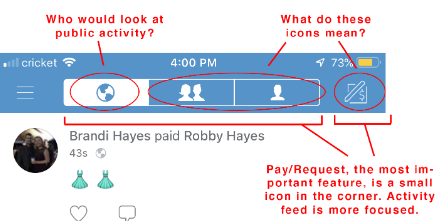
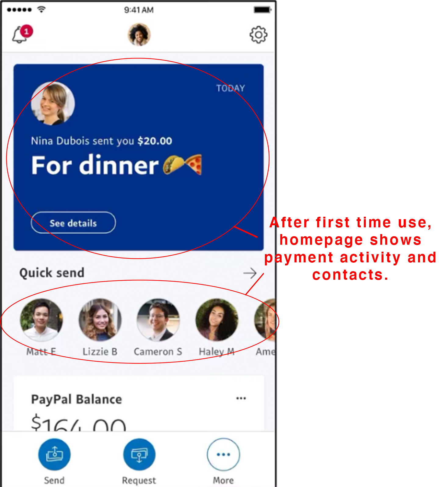
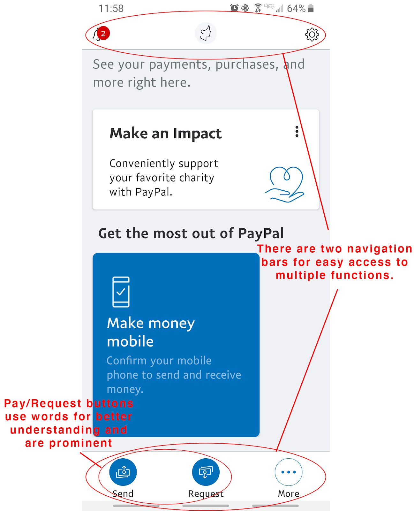
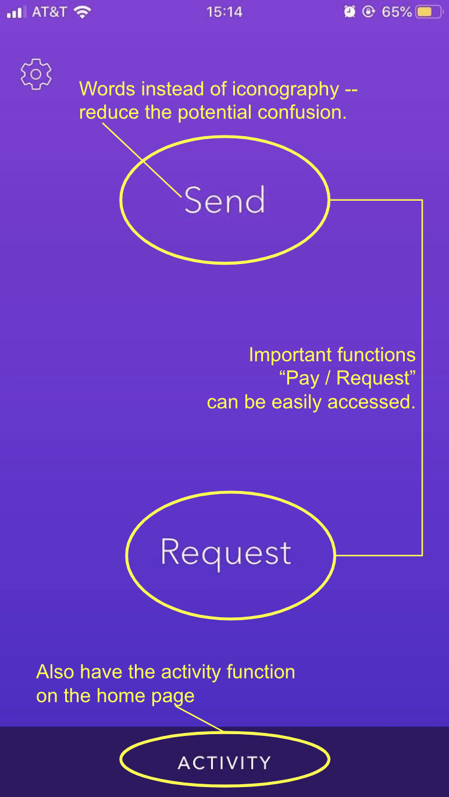

As a team of 4, we decided to look at redesigning Venmo, an application used
by many individuals from teens to adults that provides a
convenient method of transferring money from one person to another. Venmo has grown to be a staple in almost
every person’s mobile phone, especially within a social
context. Typical use cases are for when a friend pays for you and you want to pay them back, or you are buying
an item or service from a seller off virtual marketplaces
like Craigslist and eBay.
To get some insight on the current issues of Venmo, we decided to test both experienced and inexperienced Venmo
users. Experienced Venmo users were mainly college students
because of the large amount of social interactions they partake in, whether it be eating out, buying items off
of each other, and hosting club fundraisers. We understand
that experienced users will have a preexisting bias for the understanding of Venmo, how it works, and their
preferences in terms of money transaction apps, but conducting
user tests on them will give us insight on issues that even experienced users may have. We also tested some
working adults and college students who have little experience
or never used Venmo before. Their limited experience will give us insight on the more basic user errors that
inexperienced users may have. We then conducted a competitive
analysis to see how other similar apps designed their apps. Afterwards, we created sketches of our redesigns and
made two working fusion prototypes.
This was a fun redesign because I personally use this app a great deal and have noticed some issues. For
example, the location of the friends list, and the whole purpose
of a public section. From this case study, I was able to improve my skills on conducting user testing and
condensing the data. Additionally, I improved on using
competitive analysis to see how other apps differ.
1. Initial User Testing
To redesign Venmo, we first needed to interview some users and observe their interaction with the app. We
chose to assess 4 users of differing degrees of Venmo usage and
tech knowledge.
Before having the users test the app, we needed to know their prior knowledge and experiences with
technology and, more specifically, Venmo. We asked them questions
and recorded their answers.
Interview Plan:
Do you use a smartphone? If so, how often do you use your smartphone?
How social are you in terms of interacting with friends, going out to eat, and such?
What do you think about money transferring apps in comparison to tangible currency?
Do you use any money transferring apps like Venmo, Zelle, and such? If so, how often do you use it and for what purpose?
Do you use a particular money transferring app and why do you use it compared to other ones?
To test each user, in order to focus on the different aspects of the app, we had them do 4 unique tasks. To observe the user, a tester gave one task at a time,
constantly reminding them to speak out their thoughts and process, and a recorder recorded their words and action onto a
document.
Tasks: (for each task, the user starts on the homepage)
Give your thoughts on the homepage, specifically the “Me”, “Friends”, and “Public” tabs.
Your friend, Bob Boberson (Venmo ID @BBoberson), bought your groceries because you forgot your wallet at home. It cost $0.01. Pay him back.
You feel like you’ll hang out with Bob more in the future so you want to add him as a friend. Try to find him again, add him as a friend, and look at his profile.
You want to know who is on your Venmo friend-list. Try to find the list and view it.
2. Initial User Testing Analysis
With the user testing results recorded, we organized the information further by briefly summarizing what went right and wrong with each user. In addition,
we labelled each users' top 3 usability errors according to Jakob Nielson's 10 Usability Heuristics.
User 1: Jeudi (Middle-aged adult, little Venmo experience, iOS) What worked:
Although she had a lot of trouble completing the tasks, she was still able to complete them successfully. For task 1, she explained her dislike of the “public” tab,
how she likes the gist of the homepage, and expressed an understanding of the iconography. For task 2, after searching for Bob, she was able to fulfill the rest of
the process of paying. For task 3, after searching for Bob, she was able to see his profile and also add him as a friend. Lastly, for task 4, she was able to find a
list of her friends.
What didn't worked:
While completing her tasks, she had a lot of trouble traversing and finding important aspects of the app. For task 1, she was mainly confused about iconography, but
eventually learned what each icon meant. For task 2, she had a hard time finding Bob without the use of the user tag through the “search people” page. When she tried
to pay him without a message, she was prompted to put a message. For task 3, she had a hard time remembering how to add Bob as a friend. She went through the
“pay/request” page first, then to her profile, then to the homepage where she searched through the “me, friends, and public” tabs. She eventually searched Bob,
looked at his profile, and saw the prompt to add him. Lastly, for task 4, she first looked at the “friends” tab, but then found the friends list under the
“search people” page.
Top 3 Usability Errors:
Hard time searching for relevant users using limited resources. (Flexibility and Efficiency of Use)
Logical location of items, such as friends list, profile. (Match Between System and Real World or Recognition Rather than Recall)
Iconography is not intuitive. (Match Between System and Real World)
User 2: Cindy (College student, large Venmo experience, iOS) What worked:
Since she has a lot of experience of using Venmo, she completed all the tasks successfully. In task 1, she said that she likes Venmo’s blue and white color theme, and
in general, the design of the homepage is clean and simple. In task 2, after searching for the full Venmo ID of Bob, she easily “paid” Bob the correct amount of money.
In task 3, she correctly found Bob by searching the full Venmo ID and then “added” him as a friend. In task 4, she correctly clicked on the “searching people” tab to
pull out her friends’ list.
What didn't worked:
In task 1, she said that she thinks the public function is unnecessary since she has no need to know how other people spend their money. Moreover, she thought that
the homepage could switch with the side menu, since most of the time she uses Venmo to send money to, or request money from others. But now these functions are
“hiding” in the side menu instead of directly appearing on the homepage. In task 2, she first searched by Bob’s name, but there are a lot of people with the same
name and she was unable to find out which Bob she was looking for. In task 3, she asked for the QR code of Bob since she is used to scanning the QR code to add others
as friends. Task 4 worked well, but she still said that she was confused at the beginning about how to find the friends’ list.
Top 3 Usability Errors:
Cannot find the specific person only based on the name. (Flexibility and Efficiency of Use)
The friend list is in the “searching people” tag. (Match Between Systems and the Real World)
The homepage includes little or almost no useful information. (Aesthetic and Minimalist Design)
User 3: Kevin (College student, large Venmo experience, iOS) What worked:
Kevin seemed to have a general idea of how Venmo works because he’s been using it for almost 4 years now. For task 1, he found the commenting system to be quite
entertaining as he gets to see the banter between his friends and had no comment about the private feed other than that he can see his history. Because he was a
mutual friend of mine, Kevin had no trouble finding Bob’s profile through a unique method. He ended up going into his own feed to find a mutual friend that paid
Bob back to find his profile to pay him back. For task 3, to find Bob in a more simple manner, he found him through the search function where Bob ended up in the
list of “top people.” In task 4, he was eventually able to find his list of friends after 3 minutes of searching.
What didn't worked:
Through most of the tasks, Kevin didn’t seem to understand some functions. One of the key problems he had was the utility of the “Public” feed. He thought that it was
pointless because it only shows him people that he’s never met before and thought it would be better off without it. He also didn’t see a difference between “searching”
and “paying” people as the results were the same. There wasn’t a reason to search for a person because you would only search for someone to request or pay them. There
weren't any problems with task 3. However, with task 4, Kevin ran into some trouble finding his friends list. While observing, I noticed that the layout of the Venmo
app is different on iOS compared to Android. So finding a friend list on the iPhone was a little more difficult.
Top 3 Usability Errors:
Finding “Friends List” was difficult because it wasn’t located where he thought it would be. (Match Between System and Real World or Recognition Rather than
Recall)
Venmo on ios is different from Venmo on Android (Consistency and Standards)
Does not see the difference in searching for and paying someone (Flexibility and Efficiency of Use)
User 4: Alvin (Middle-aged adult, no Venmo experience, iOS) What worked:
Alvin had no prior experience with Venmo and thought the pay/request icon was intuitive. There were no issues with understanding how to pay someone. He felt like
the side navigation bar was easy to understand and consolidated information well.
What didn't worked:
Many icons on the homepage and pay/request screen confused Alvin. He did not recognize the earth icon, person, and two people icons immediately on the homepage and
felt that he had to guess the meaning. He thought the public and friend tabs were useless and unrelated to his main goal, which is to transfer money personally and
privately. He also did not know whether he could private his transactions and felt like it was violating his privacy. The option for private transactions was not
obvious. Many smaller icons on the pay/request screen did not have universal meanings and Alvin mistakenly thought the “tag” feature was a “friending someone” feature.
Another issue was finding the person to pay for. Alvin thought he had to friend someone first in order to pay them. But finding the person to friend was a
frustrating experience. He tried typing their name and no one showed up, so he thought he needed to scan their QR code first in order for that person to appear in
the search function. He also had trouble finding the friend list and thought there was no friend list.
An overall issue that Alvin struggled with was searching for people even though Venmo provided two ways: through search people in navigation slide and the
pay/request screen. He felt like it was not easily accessible and had to press around the app to find them. It was also different on Android vs Apple. Android
had back buttons to go back but Apple UI only had the hamburger button so users forget where they are in the app.
Top 3 Usability Errors:
No search bar on the homepage to find people (Flexibility and Efficiency of Use)
Icons are confusing. They don’t have universal meaning. (Match Between System and Real World)
No back button on Apple UI so user forgot where they are and has to keep going back to the homepage (User Control and Freedom)
Based on user testing, we decided to redesign the homepage for several reasons. First, the homepage is the first screen that users interact with, which means it
would give users the important first impression of this application. Second, during the usability test, we found that almost all the participants were somehow
confused by the homepage. For example, some participants reported the iconography (public, friends, and private tabs, and the pay/request) were vague and they
could not find out what these icons stood for at a glance. Moreover, users also reported that the function “public”, which shows random people’s transferring
history is unnecessary and even hurts privacy security. Third, Venmo’s homepage for iOS and Android are different which also caused confusion. Therefore, to
improve users’ experience while using Venmo, we decided to redesign the homepage to hold the central focal point of paying/requesting while being easy to navigate.

3. Competitive Analysis
For insight on how we could redesign the component, we decided to look at how other sites solve a similar problem. In this case, we choose to see how PayPal, Zelle,
and Cash App organized their homepages, since all these applications serve a similar function.
Analysis 1: Paypal
PayPal is another money transferring service that aims to make transactions efficient and convenient to use. Once opening the application, users are met with a
homescreen using a card like format for information. The navigation bar is much easier to reach as it lays on the bottom of the screen for convenient accessibility.
The navbar has 3 options including send, request, and more. This navbar holds the most importance as it contains the primary functionality of the app. All three
options have an easy to understand iconography and are worded beneath the image. The send and request buttons are also colored in, indicating that it serves an
important purpose whereas the “more” option leadsyou to other actions that are considered extra features. The top of the screen also holds three pieces of
information including notifications, profile, and settings. There may not be much focus on this section based on the small size of the iconography.
Unfortunately, the biggest component which is between the top and bottom navbars, is slightly confusing in terms of layout. There are three different
categories which are your activity, make an impact, and get the most out of PayPal. All three of these sections are unevenly spaced and are haphazardly formatted,
overall making it a little uneasy to view. After some usage, the home page does start to include your activities as well as your contacts. What we hope to take away
from the PayPal homepage is the bottom navbar with its intentions and primary focus easy to understand and use.


Analysis 2: Zelle
Zelle is another frequently used money transferring app cooperating with multiple major banks in the United States. Zelle has a
relatively simple homepage that only contains “send”, “request” and “activity” buttons.
By reducing the elements and functions on the homepage, Zelle avoids users’ usage confusion. Another advantage brought by Zelle’s simple homepage design is that
all the fundamental functions of a money transfer application can be accomplished by one-click. As a money transferring application, users mainly expect to use
Zelle to pay or to request money from other people. The second important expectation of the users may be to check their own transferring history. Zelle’s design
displays all these three fundamental functions on the homepage, making the application very easy to be used by its users.
Moreover, Zelle directly uses simple words like “send” or “request” instead of representative iconography to indicate a particular function. This usage of words
helps users figure out how to use Zelle at their first glance, decreasing the difficulties of discovering the proper way of using Zelle.
What we learned from analyzing Zelle’s design is to put nothing else but the most fundamental functions on the homepage of the application. By applying this idea
to our redesign, we could make Venmo’s homepage less confusing and easier to use.

Analysis 3: Cash App
Cash App is currently the #1 money transfer app on the market. One of the main reasons for its success is because it provides a very
straightforward approach for transferring cash peer-to-peer without having to create an account. Users can simply link their phone number/email address and people
can find them through that information. Users can also find other users by their ID as well.
Upon opening the app, the homepage immediately directs you to the payment screen with several icons on the bottom that allow the user to switch to another
feature conveniently. For the payment screen, the input number is very large, so it is obvious for the user to understand the function of the screen. The user
can also choose to either request or pay others the amount they inputted. There are two icons on the top: a scanner for QR code transactions and
profile/settings. The bottom nav bar icons feature: my cash (how much cash you currently have), cash card (which card you are using), payment/request,
stock news, and activity (history of past transactions). The home screen nav bar allows users to visibly see where they are in the app and allows them
to always be able to exit out of the screen they are on at any given time. Overall, although Cash App does not support any of the social features, the
app is successful in creating a minimalistic and flexible layout with an easy navigation system for first-time users.
For redesign 1, we made minor, but important redesign changes to the top navigation bar or tab system. We condensed the original navigation bar by combining the
“me, friends, and public” activity tabs into a single tab called “activity”, and including a tab for pay/requesting. The reasoning behind this change is because
users were having trouble locating the pay/request button on the original. The pay/request button was next to the tab system solely dedicated to user activity.
We wanted the pay/request function to have equal spotlight with the activity feed. In addition, we changed the iconography of the navigation bar for less
confusion of what icons mean. In the activity tab, to account for “me, friends, and public” activities, we implemented a filter system, but only for “me” and
“friends”. We took out the public activity feed because users felt it was completely unnecessary since they don’t care about strangers’ activity. In addition
to the top navigation bar, we made some placement changes with the profile and the notifications. We placed the profile section at the top for easier access
than within the sidebar. The profile section includes the user’s profile, as well as, preference settings. We then put the notifications in the sidebar. The
last minor change was made in the pay/request page having the public/private option for payment activity be a more identifiable button. In the original, the
option was on the bottom corner and not indicated as a button. Overall, the design was meant to make navigation more streamline, intuitive, and easily understood.
For our second redesign, we decided to reinvent the home page entirely while making it clearly identifiable as Venmo. We took some guidance and inspiration from other
competing apps such as Cash App and PayPal as well as our own redesign sketches to make a high fidelity prototype. We made the homepage have a nav bar on the bottom
with 3 primary functions including “Friends”, “Transfer”, and “Settings.” We decided that having the nav bar at the bottom would make it easier for users to reach
what they are trying to do. We made the iconography easy to understand and labeled it underneath for safe measures. The users profile would also be viewable at the
top half of the page and the primary function of paying and requesting would be easily viewable.
The friends page takes you to the “friends” activity tab just like it would do in the original Venmo. Users would also have the option of looking for a specific
friends activity with a drop down menu on the top. Our reasoning for making the activities list separated into the left and right is to help indicate what the user
paid and what the user requested. We also made sure to include the reactions and comments and add more than just the “heart” reaction so that users can express
themselves more accurately.
The “pay/request” page is reminiscent of the original Venmo but with a few changes. We decided to add a slider to indicate if you were paying or requesting. The
“search” function and “what’s it for” section are the same, but the number pad is a little more well integrated into the page. The amount you are transferring is
also enlarged in the middle so that users don’t accidently write down the wrong amount.
The “settings” tab has everything the settings would have in the original Venmo. The hamburger indicator on the top left of each page is also apparent for extra
information. The “notification” indicator is also there at all times so that users would know that someone has requested money from them or added them as a friend.
Overall, we thought that by making the primary functions easily accessible at the bottom of the page would greatly improve the efficiency of many users. We thought
about the user flow and made sure that everything is logically placed and well understood so that users are less prone to errors.